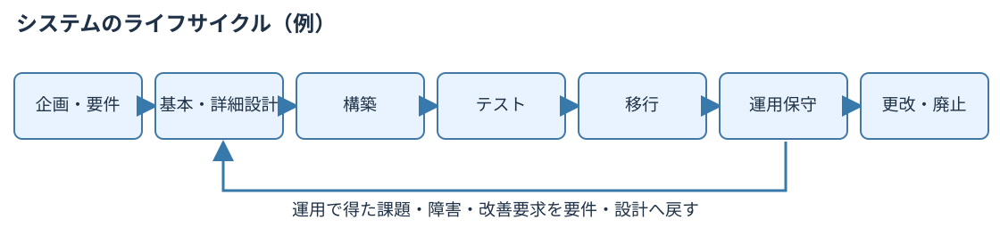
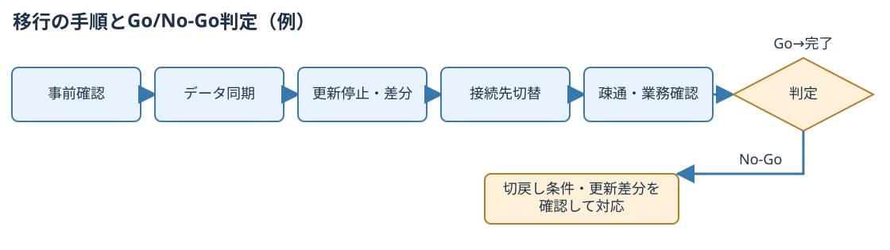

第7講 開発・構築・運用保守・移行のライフサイクル
到達目標
システムの企画・要件定義から設計、構築、テスト、移行、運用保守、廃止までの流れを説明し、各工程の目的・成果物・完了条件・責任分担を理解する。変更・障害・移行において、どの設計書、試験記録、ログ、承認を確認するか判断できる。
資料・前提と重要度
2026-11-21にGitHub運用マスターv1.2、全18編224講の正式カリキュラム、進捗（第1〜6講修了）を確認した。工程名称は組織・開発方式で異なる。以下は汎用的な工程モデルであり、ウォーターフォールでもアジャイルでも、要求・設計・実装・検証・運用への責任は消えない。ITIL 4、ISO/IEC/IEEE 15288、ISO/IEC/IEEE 12207、IPAの関連資料は参考候補だが、今回その版・本文・該当箇所は実照合していない。製品固有の操作を断定せず、設定・ログは架空の学習用例とする。
A必須：工程と成果物、テスト・移行・運用引継ぎ。B実務：変更管理、障害対応、JP1・DB・バックアップの依存関係。C発展：方式比較、RTO/RPOを踏まえた移行判断。
1. なぜライフサイクルを理解するのか
運用担当が「本番で動いているもの」だけを見ていると、障害の原因となった設計判断や構築時の設定を追いにくい。例えば夜間バッチが失敗したとき、JP1の終了コードだけでなく、ジョブ設計書、DB接続先、ファイル連携仕様、リリース履歴、再実行手順まで必要になる。
ライフサイクルは、一度作って終わる直線ではない。運用で得た障害・性能・セキュリティの知見を次の要件や設計に戻し、改修・更改・廃止まで繰り返す。業務上の責任は工程の切り替わりで途切れてはならない。

図の左から右への矢印は主要な工程の進行を、下側の戻り矢印は運用で判明した課題が設計・改善へ戻ることを示す。工程は必ず一回ずつ、厳密にこの順序で実施するという意味ではない。
2. 企画・要件定義：何を守るシステムか決める
企画では業務課題、予算、納期、利用者、システム化の範囲を整理する。要件定義では業務要件（何を実現するか）と非機能要件（どの品質を求めるか）を具体化する。例えば「注文を登録できる」は機能要件、「月末ピークで毎秒100要求を扱い、p95応答時間1秒以下を目標」は非機能要件の例である。数値は架空で、実際には測定条件を決める。
可用性は「障害時の復旧時間RTO」、データ保護は「許容データ損失RPO」、セキュリティは「誰がどの操作をできるか」、運用は「夜間の監視・エスカレーション体制」まで要件化する。要求が曖昧だと、後工程で「バックアップはあるが戻せない」「ジョブは正常終了したが翌朝の業務に間に合わない」が起きる。
成果物例：要件定義書、非機能要件一覧、業務フロー、システム境界、受入基準。完了判断は関係者が優先順位と受入条件を合意したかである。
3. 基本設計：方式と責任分担を決める
基本設計は要件を実現する全体方式を決める工程である。Web/AP/DBの分離、LBの有無、ネットワークセグメント、DB冗長化、バックアップ・DR、ジョブ実行順序、認証・認可、監視対象などを定義する。
例えば「Web/AP/DBの3層」は論理構成であり、物理ホストやAZを分けるかは可用性・予算・運用負荷に依存する。LBを置いても単一DBが残れば共通障害点になる。図だけでなく、なぜその構成にしたかという設計判断の記録が重要である。
成果物例：システム構成図、ネットワーク構成図、機能配置図、運用方式設計、バックアップ方式設計、ジョブ運用方式、障害時切替方針。完了条件は要件と方式の対応が追跡でき、重大な未決事項が明確になっていること。
4. 詳細設計：設定に落とし込める粒度にする
詳細設計では実装・構築担当が同じ設定を再現できるよう、ホスト名、IP、ポート、FW許可、OS設定、DBユーザー権限、ジョブの先行後続、監視閾値、ログ保管期間などを具体化する。
例えば架空の構成では「ブラウザ→Nginx:8080→FastAPI:8000→PostgreSQL:5432」とする。APとDBは外部公開しない。通信要件表には送信元、宛先、プロトコル、ポート、用途、必要な環境を記載する。
| 送信元 | 宛先 | ポート | 用途 | 公開範囲 |
|---|---|---|---|---|
| 自宅ブラウザ | Nginx | TCP/8080 | 画面・API入口 | localhostのみ |
| Nginx | FastAPI | TCP/8000 | API転送 | 内部ネットワーク |
| FastAPI | PostgreSQL | TCP/5432 | SQL | 内部ネットワーク |
これは学習用の例であり、本番のセキュリティ要件を満たす構成を保証するものではない。
詳細設計は「設定値の一覧」で終わらない。接続が失敗したときにどのログで何を判断するか、権限を誰が管理するか、変更時の影響をどう評価するかも定義する。
5. 構築：設計を実際の環境に反映する
構築ではOS、ミドルウェア、ネットワーク、ストレージ、DB、ジョブ、監視、バックアップなどを設定する。手順書に基づき、実行前の前提確認→変更→結果確認→証跡保存→失敗時の切戻しを行う。
設定の例（架空、実行していない）：
services:
web:
ports: ["127.0.0.1:8080:80"]
ap:
expose: ["8000"]
db:
expose: ["5432"]
この断片は説明用であり、イメージ、ネットワーク、認証情報、永続ボリューム等を省略しているため単独では動かない。ここでWebだけをホストのループバックに公開し、AP/DBは内部到達を想定している。ただし expose はネットワーク境界のセキュリティ制御そのものではない。実際の接続可否はネットワーク構成・ポート公開・FW等で確認する。
構築結果は「コマンドが終了コード0」だけでなく、実際の設定値、待受、通信、ログ、監視の反映まで確認する。成果物は構築手順書、パラメータシート、構築記録、構成管理台帳である。
6. テスト：正常系だけでなく異常系を確かめる
テストは目的別に分ける。単体テストは個別機能、結合テストはコンポーネント間、システムテストは全体の要件、運用テストは監視・バックアップ・復旧・ジョブ再実行・エスカレーションなどを確かめる。受入テストは業務側の受入基準を確認する。
| 試験 | 操作例 | 期待結果 | 証跡 |
|---|---|---|---|
| 正常系 | /api/tasksへGET | 200と正しいデータ | HTTP応答・APログ |
| AP停止 | APプロセスを停止 | Web入口は502等、監視通知 | Webエラーログ・監視履歴 |
| DB停止 | DBを停止 | DB依存API失敗、readyが異常 | APログ・ヘルスチェック |
| 復旧 | DB/APを復旧 | 正常応答、データ整合性維持 | 再試験結果 |
| バッチ異常 | 入力ファイル形式不正 | 後続保留、通知、再実行条件確認 | JP1状態・取込ログ |
異常試験は検証環境で行う。期待値は実装と設計に合わせて定義する。例えばAP停止で502になるか504になるかは通信状況やタイムアウト設定によって変わる。
テスト記録は日時、対象バージョン、環境、手順、入力、期待結果、実結果、ログ参照、判定者を残す。「テストした」という口頭説明だけでは再現性がない。
7. 移行：新しい環境へ安全に切り替える
移行はサーバやDBをコピーするだけではない。業務停止、データの最終同期、アプリ切替、DNS/LB、外部連携、バッチ、監視、バックアップ、利用者確認を整合させる必要がある。

図は移行前確認→データ同期→書込停止・差分反映→切替→疎通・業務確認→完了判定という例を示す。判定で問題があれば、切戻し条件とデータ整合性を確認して対応する。旧環境に戻すだけで新環境の更新データを失うことがあるため、切戻しは無条件に安全ではない。
7.1 移行方式の比較
| 方式 | 特徴 | 主なリスク・判断材料 |
|---|---|---|
| 一括切替（ビッグバン） | ある時点でまとめて切替 | 停止時間・失敗時影響が集中 |
| 段階移行 | 機能・利用者・拠点ごとに移す | 新旧共存・データ整合性が複雑 |
| 並行稼働 | 新旧を一定期間併用・照合 | 二重処理、データの正本、運用負荷 |
| ブルーグリーン | 旧新の環境を用意し経路を切替 | DBスキーマ互換、セッション、切戻し |
7.2 具体例：日次バッチを伴うDB移行
架空の手順として、①旧環境の最終バッチ終了確認、②外部ファイルの受信・取込完了確認、③更新停止、④DBの最終同期、⑤件数・チェックサム・重要テーブルの整合性確認、⑥接続先切替、⑦APIとジョブの疎通、⑧業務側の受入確認を行う。
ShadowImage/TrueCopyやDBバックアップがあっても、アプリケーション整合性やジョブの二重実行防止は別問題である。切替前後にどちらのDBが正本かを明示し、切戻しの判断期限と承認者を定義する。
移行計画書にはタイムライン、役割、Go/No-Go判定、バックアップ、切戻し、連絡体制、証跡を含める。停止許容時間とRTO/RPOが守れるか事前リハーサルで測定する。
8. 運用保守：監視・障害対応・変更を循環させる
運用は定常監視、日次バッチ、バックアップ、容量管理、アカウント管理、パッチ適用、障害一次対応などを含む。保守は不具合修正、製品更新、構成改善、セキュリティ対策を含む。現場では役割が重なる。
障害対応では、検知→影響把握→暫定対処→原因調査→恒久対策→再発防止を行う。変更管理では変更要求、影響分析、レビュー・承認、作業計画、実施、事後確認を記録する。緊急変更は迅速化しても記録と事後レビューが必要である。
例としてJP1ジョブが異常終了したら、ジョブ名・終了コード・ログ・入力ファイル・DBトランザクションの確定範囲・後続ジョブ状態を確認する。単純な再実行で二重登録が起こり得るため、処理済みキーや取込履歴を照合する。
02:13:10 job=IMPORT_DAILY status=ABEND rc=12
02:13:10 input=orders_20261121.csv rows_read=12840
02:13:10 rows_processed=6000 commit_count=unknown
02:13:11 successor=DAILY_REPORT state=WAIT
架空のログであり、rows_processed=6000 は6000件のCOMMITを保証しない。ジョブ設計書とDBログを照合し、後続を保留したまま再実行・再開点を判断する。
成果物は運用手順書、監視定義、障害記録、変更履歴、構成管理台帳、バックアップ・復旧試験記録、定期レビューである。
9. 運用引継ぎ：構築完了と運用開始の間のゲート
運用担当に渡すべきものは完成したサーバだけではない。最新の構成図、パラメータシート、監視一覧、ジョブ一覧、バックアップ・復旧手順、連絡網、権限申請、既知問題、変更・切戻し手順、証明書・ライセンス期限、運用試験結果が必要である。
「アラートが鳴ったら誰が何を判断するか」が未定なら運用開始準備は不十分である。例えばDB容量80%警告時に、増加率、残日数、業務影響、増設申請、緊急時の連絡先が追えることを確認する。
運用受入判定は、監視が動くこと、ログにアクセスできること、障害連絡が通ること、復旧を試したこと、担当と責任境界が明確であることを条件にする。
10. 更改・廃止：最後まで安全に管理する
OS・DB・ミドルウェアのサポート期限、容量・性能、脆弱性、保守費用などから更改が必要になる。更改は新規構築に加え、旧環境との互換性、データ移行、外部連携、停止計画を扱う。
廃止ではDNSやLB、ジョブ、監視、バックアップ、権限、証明書、契約、資産台帳を整理し、保存義務に従ってデータを保管または安全に消去する。サーバを停止するだけでは、残存アカウントや外部連携、バックアップに情報が残る。
11. 工程間で発生する典型的な失敗と対策
| 失敗 | なぜ起きるか | 予防・対処 |
|---|---|---|
| 本番でポートが通らない | 設計の通信要件がFW設定に反映されない | 通信要件表と実設定・疎通試験を突合 |
| バッチ再実行で二重登録 | 異常系の再実行設計・試験不足 | 冪等性、処理済み管理、異常試験 |
| 切替後に外部連携が旧環境へ送信 | 接続先一覧と切替対象が不完全 | 連携台帳、送受信確認、切替チェック |
| 監視はあるが復旧できない | 手順・権限・訓練が未整備 | 運用受入、復旧訓練、権限確認 |
| 構成図と実機が違う | 変更後に設計書・台帳を更新しない | 変更管理にドキュメント更新を組込 |
12. 設計判断：いつ誰が何を承認するか
技術的に実現可能でも、事業上の停止許容やリスクに合わなければ採用できない。移行で一括切替を選ぶなら停止窓、復旧余力、リハーサル結果が必要である。段階移行を選ぶなら新旧間のデータ整合性と責任境界を設計する。
実務では担当者がすべてを独断で決めない。要件の優先順位は業務責任者、設計・変更は技術責任者や変更承認者、運用受入は運用責任者など、組織の承認経路を確認する。責任分担をRACI（実行責任・説明責任・協議先・情報共有先）で整理することもある。
「設計した」「構築した」「テストした」「引き継いだ」は別の完了条件であり、各ゲートの証跡が次工程の前提になる。
13. 要点整理
ライフサイクルは要件→設計→構築→テスト→移行→運用保守→更改・廃止の循環である。要件は測定可能にし、設計は理由と依存関係を残し、構築は設定と証跡を一致させ、テストは異常系まで確かめる。移行はデータの正本と切戻しを管理し、運用は監視・障害・変更の記録を改善に戻す。運用引継ぎには手順・権限・監視・復旧訓練が必要である。
次講
第8講「総合演習：企業システムの構成図と処理経路を読み解く」。理解度チェックは四択10問・15点満点で別途実施し、回答前に正解を提示しない。